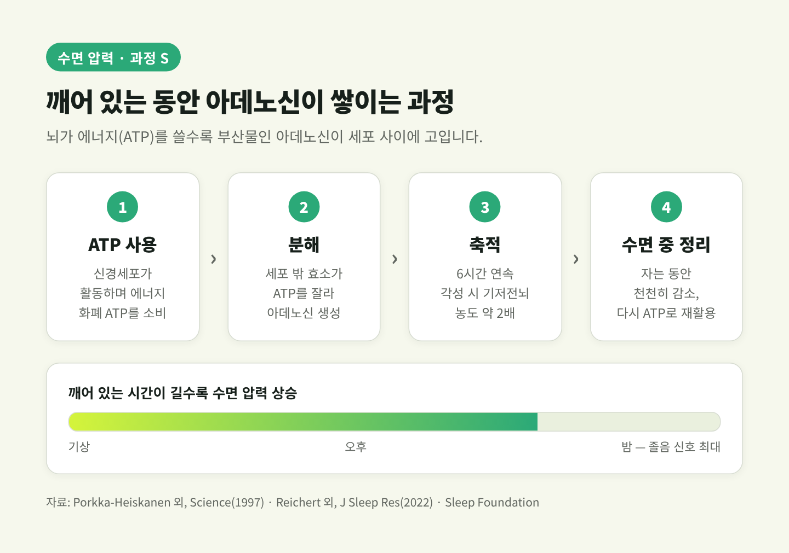
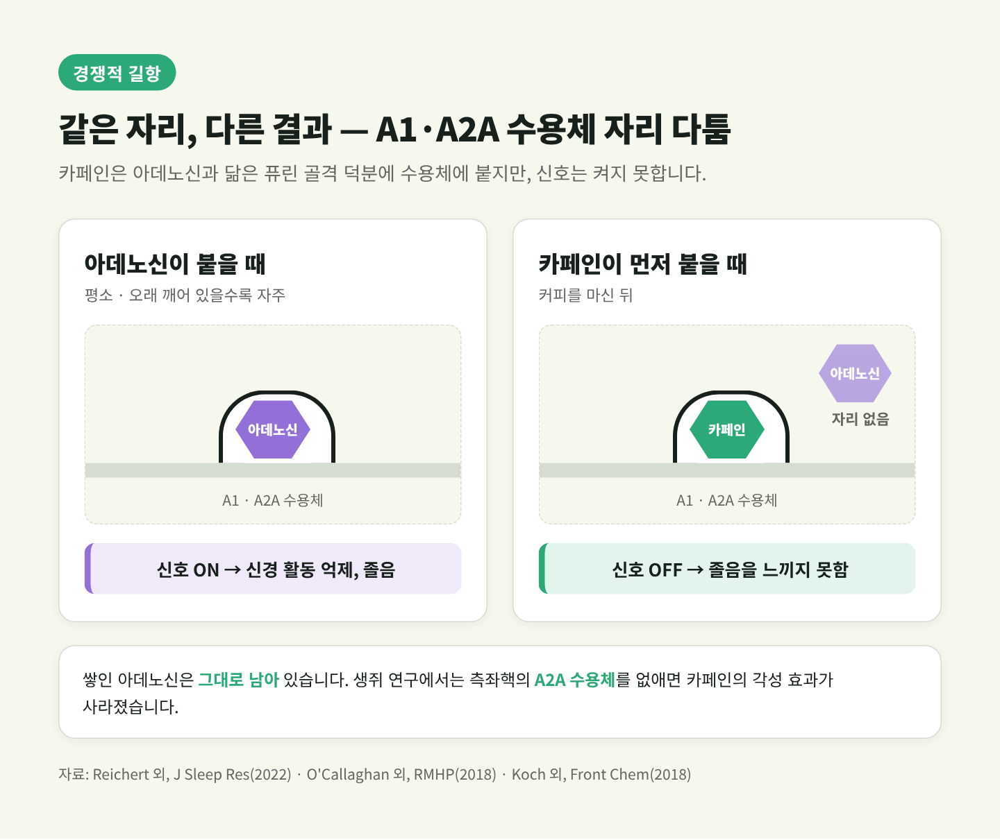
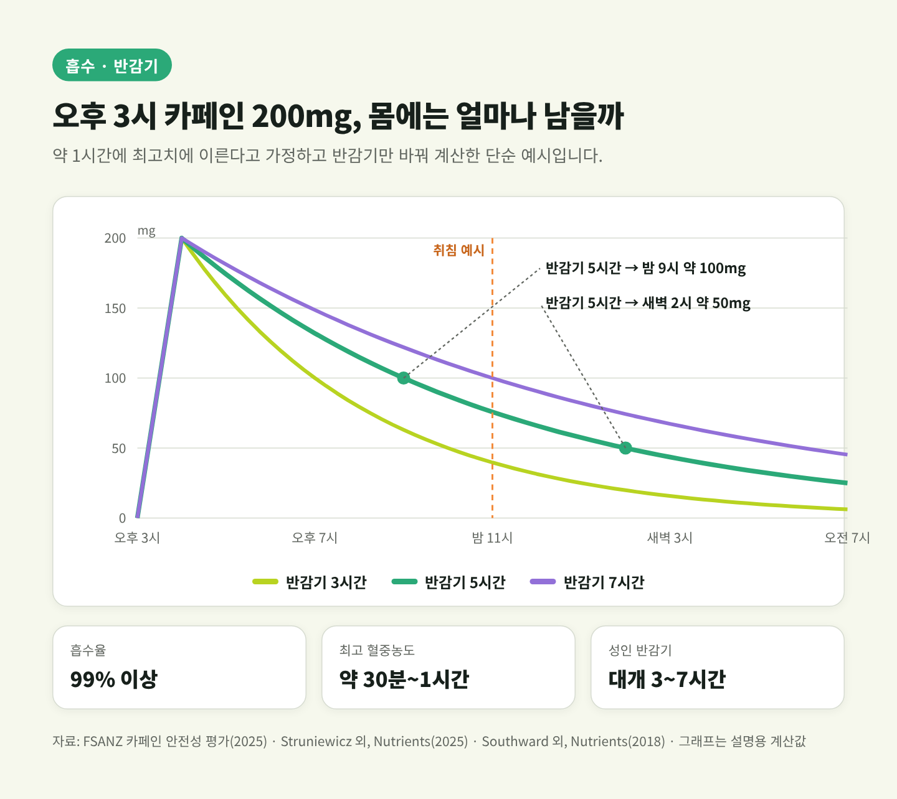
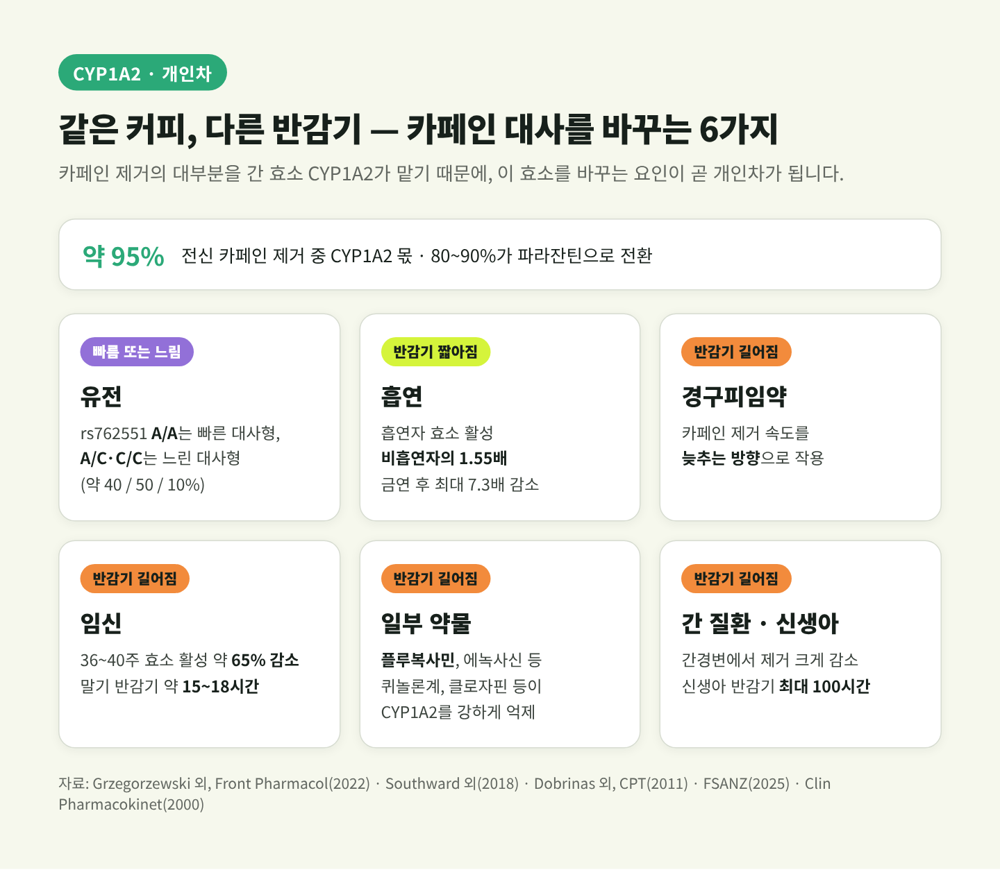
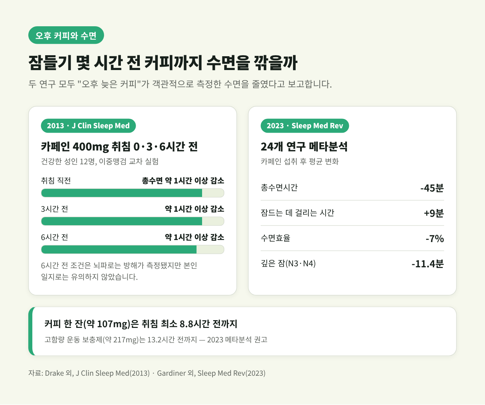
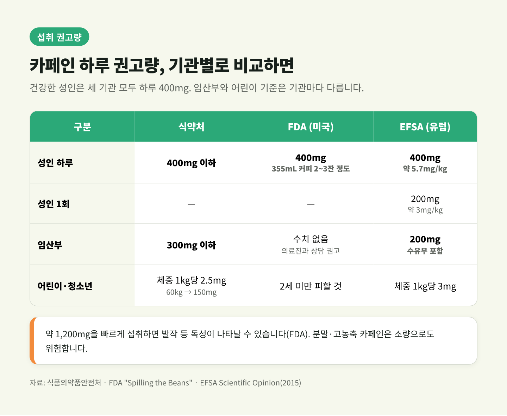

카페인 아데노신 원리 — 커피는 어떻게 졸음을 속이고 왜 내성이 생길까

이번 글에서는 커피 한 잔이 졸음을 밀어내는 원리를 정리해 보겠습니다. 주인공은 카페인과, 깨어 있는 동안 뇌에 쌓이는 물질인 아데노신입니다. 흡수와 반감기, 사람마다 다른 대사 속도, 내성과 금단, 권고량까지 차례로 살펴봅니다.
먼저 세 줄로 요약하면 이렇습니다.
- 카페인은 졸음 신호인 아데노신이 붙을 수용체 자리를 먼저 차지합니다. 피로를 없애는 것이 아니라, 피로를 느끼지 못하게 가리는 셈입니다.
- 카페인은 30분~1시간 안에 혈중 최고치에 이르고, 성인 반감기는 대개 3~7시간입니다. 간 효소 CYP1A2의 개인차 때문에 사람마다 차이가 큽니다.
- 매일 마시면 몸이 수용체를 늘리는 쪽으로 적응한다는 연구가 있습니다. 끊으면 12~24시간 뒤 두통이 올 수 있습니다. 건강한 성인 권고 상한은 하루 400mg입니다.
이 글은 일반적인 과학 정보를 정리한 것이며 의료 조언이 아닙니다. 두근거림, 불면, 불안 같은 증상이 있거나 임신 중이거나 약을 복용 중이라면 의사·약사와 상담하시길 권합니다.
■ 깨어 있는 시간만큼 쌓이는 졸음, 아데노신
수면 연구에는 '수면 압력'이라는 개념이 있습니다. 오래 깨어 있을수록 잠이 쏟아지는 경향을 말합니다. 수면 연구자들은 이를 '과정 S'라고 부릅니다. 잠들 무렵 나타나는 깊은 잠의 뇌파, 즉 델타파의 세기도 직전에 깨어 있던 시간에 비례합니다.
이 압력을 실어 나르는 후보로 가장 많이 연구된 물질이 아데노신입니다. 뇌세포는 활동하는 동안 에너지 화폐인 ATP를 씁니다. ATP가 분해되면 그 끝에 아데노신이 남습니다. 신경세포와 성상교세포가 내보낸 ATP는 세포 밖 효소에 잘려 아데노신이 되고, 세포 사이 공간에 고입니다.
1997년 Science에 실린 고양이 실험이 이를 잘 보여줍니다. 뇌의 기저전뇌라는 부위에서 아데노신을 측정했더니, 깨어 있을 때가 서파수면 때보다 높았습니다. 6시간 동안 계속 깨워 두자 농도는 처음의 약 2배로 올랐습니다. 회복 수면 3시간 동안에는 천천히 내려갔지만 원래 수준까지는 돌아오지 않았습니다.

다만 아데노신이 졸음의 전부는 아닙니다. 2022년 수면 연구 리뷰는 아데노신 농도 변화가 분 단위로 빨라, 하루 동안 완만하게 오르는 졸음 곡선 전체를 설명하긴 어렵다고 지적합니다. 오래 깨어 있을 때 특히 중요한 신호라고 이해하는 편이 정확합니다.
■ 수용체 자리 다툼 — 카페인은 열쇠 구멍을 막는다
아데노신은 신경세포 표면의 수용체에 붙어 신호를 보냅니다. 수면·각성과 관련해 주로 거론되는 것은 A1과 A2A 수용체입니다. A1이 활성화되면 흥분성 신경전달물질인 글루탐산 방출이 줄어듭니다. 두 수용체를 자극하는 물질을 주면 깊은 잠, 곧 서파수면이 늘어납니다.
카페인의 화학명은 1,3,7-트라이메틸잔틴입니다. 아데노신의 염기 부분과 같은 퓨린 계열 고리를 가지고 있어, 수용체 입장에서는 닮은 모양으로 보입니다. 그래서 카페인은 수용체에 붙을 수 있습니다. 하지만 붙어도 신호를 켜지 못합니다.
자리를 먼저 차지해 아데노신이 들어오지 못하게 막을 뿐입니다. 약리학에서는 이를 경쟁적 길항이라고 부릅니다. 카페인은 A1과 A2A에 비슷한 정도로 결합하는, 비선택적이고 비교적 약한 길항제입니다.

어느 수용체가 각성을 주로 담당할까요. 생쥐 연구에서는 A2A 쪽이 핵심으로 나타났습니다. 뇌의 측좌핵이라는 부위에서 A2A 수용체를 없애자, 카페인을 줘도 잠을 쫓는 효과가 사라졌습니다.
유전자도 반응에 영향을 줍니다. A2A 수용체 유전자(ADORA2A)의 흔한 변이 rs5751876에서 C 대립유전자를 가진 사람에게서만 카페인이 수면 뇌파에 영향을 준 연구가 있습니다. 같은 커피를 마셔도 잠이 달아나는 정도가 다른 이유 중 하나입니다.
정리하면 카페인은 피로를 지우지 않습니다. 쌓인 아데노신은 그대로 있고, 그 신호가 잠시 가려질 뿐입니다.
■ 몇 분 만에 퍼지고, 몇 시간 머문다
카페인은 흡수가 빠르고 거의 완전합니다. 호주·뉴질랜드 식품기준청(FSANZ)의 2025년 안전성 평가에 따르면 경구 흡수율은 99% 이상입니다. 약 20%는 위에서, 나머지는 소장에서 45분 안에 흡수됩니다.
혈중 농도가 최고에 이르는 시간은 자료마다 조금 다릅니다. 건강한 남성 연구에서는 평균 약 30분이었습니다. 2025년 임신·카페인 리뷰는 약 60분으로 정리했습니다. 초콜릿 속 카페인은 1.5~2시간으로 더 느립니다. 대략 30분에서 1시간 사이라고 보시면 됩니다.
반감기는 몸속 카페인이 절반으로 줄어드는 데 걸리는 시간입니다. FSANZ는 성인에서 "대개 3~7시간"으로 봅니다. 다른 리뷰들은 평균 4~6시간, 넓게는 2~12시간까지 보고합니다. 범위가 넓다는 사실 자체가 중요한 정보입니다.

계산을 하나 해 보겠습니다. 오후 3시에 카페인 200mg을 마셨다고 해 보겠습니다. 1시간 뒤 최고치에 이르고 반감기가 5시간이라고 단순화하면, 밤 9시에도 약 100mg이 남습니다. 새벽 2시에도 약 50mg이 몸에 있습니다. 실제로 200mg을 섭취하고 16시간이 지난 뒤에도 침에서 카페인이 검출됐다는 연구가 있습니다.
■ 같은 커피, 다른 반감기 — CYP1A2와 개인차
몸에 들어온 카페인을 처리하는 곳은 간입니다. 전신 카페인 제거의 약 95%를 간 효소 CYP1A2가 맡습니다. 카페인의 약 80~90%가 이 효소를 거쳐 파라잔틴으로 바뀌고, 테오브로민(약 11%)과 테오필린(약 4%)이 뒤따릅니다. 변하지 않은 채 소변으로 나가는 양은 3% 이하입니다.
이 효소의 속도가 사람마다, 상황마다 다릅니다.
- 유전: CYP1A2 유전자 변이 rs762551에서 A/A형은 '빠른 대사형', C를 가진 A/C·C/C형은 '느린 대사형'으로 분류됩니다. 한 리뷰는 빈도를 약 40%, 50%, 10%로 정리했습니다. 여러 요인이 겹치면 효소 활성이 최대 60배까지 차이 난다는 추정도 있습니다.
- 흡연: 담배 연기는 CYP1A2를 활성화합니다. 흡연자 194명을 조사한 연구에서 효소 활성은 비흡연자의 1.55배였습니다. 4주 금연 뒤에는 사람에 따라 변화가 없거나 최대 7.3배 줄었습니다. 금연 직후 같은 양의 커피가 더 세게 느껴질 수 있는 이유입니다.
- 경구피임약: 흡연과 반대로 카페인 제거를 늦춥니다.
- 임신: 임신 후기로 갈수록 CYP1A2 활성이 떨어집니다. 36~40주에는 출산 후 대비 평균 65% 낮았습니다. 반감기는 임신 말기 약 15시간, 많게는 18시간까지 늘어난다는 보고가 있습니다.
- 약물: 항우울제 플루복사민, 일부 퀴놀론계 항생제(에녹사신 등), 클로자핀 등은 CYP1A2를 강하게 억제해 카페인 농도를 높일 수 있습니다.
- 간 질환·신생아: 간경변에서는 제거 속도가 크게 떨어집니다. 신생아는 효소가 미성숙해 반감기가 최대 100시간에 이르고, 생후 5~6개월이 지나야 성인 수준이 됩니다.

누군가는 저녁 커피를 마시고도 잘 잡니다. 누군가는 점심 커피 한 잔에 밤을 설칩니다. 의지의 문제라기보다 효소와 수용체의 차이일 가능성이 큽니다.
■ 내성과 금단 두통, 몸이 수용체로 맞서는 방식
매일 커피를 마시면 처음만큼 효과가 나지 않는다고 느끼기 쉽습니다. 이를 설명하는 대표적인 가설이 수용체 상향조절입니다.
1988년 쥐 연구에서는 만성 카페인 섭취 뒤 대뇌피질의 A1 수용체 수가 유의하게 늘었습니다. 신호를 전달하는 G단백질(Gi)도 대조군의 133%로 증가했습니다. 연구진은 이를 계속 막히는 수용체에 대한 몸의 보상으로 해석했습니다. 열쇠 구멍이 막히자 구멍을 더 뚫는 셈입니다.
다만 반대 결과도 있습니다. 다른 쥐 연구에서는 피질의 아데노신 결합 부위 수에 변화가 없었고, 상향조절이 내성의 기전은 아니라고 결론 내렸습니다. 2022년 리뷰 역시 사람에게서 내성이 어느 정도인지는 아직 불분명하다고 봅니다. 그래도 사람에게서 내성이 나타난다는 점 자체는 여러 연구에서 반복 확인됐습니다.
흥미로운 관찰도 있습니다. 카페인의 각성 효과는 24시간 넘게 끊었다가 마셨을 때, 그리고 수면 압력이 높을 때 가장 크게 나타납니다. 규칙적으로 마시는 사람에게 아침 커피는 각성을 더한다기보다, 밤새 끊긴 상태를 원래대로 되돌리는 쪽에 가까울 수 있습니다.
수용체가 늘어난 상태에서 카페인을 끊으면 어떻게 될까요. 막혀 있던 자리가 한꺼번에 열리면서 아데노신 신호가 평소보다 강하게 들어옵니다. 이것이 금단 증상의 신경화학적 기전으로 거론됩니다.
2004년 금단 연구를 종합한 리뷰의 수치는 다음과 같습니다.
- 실험 연구에서 두통이 나타난 비율은 약 50%
- 끊은 뒤 12~24시간에 시작, 20~51시간에 가장 심함
- 지속 기간은 2~9일
- 하루 100mg 정도만 마시던 사람도 겪을 수 있음
- 피로, 졸림, 집중력 저하, 짜증, 우울한 기분, 머리가 맑지 않은 느낌도 흔함
미국 식품의약국(FDA)은 금단이 위험하진 않지만 불쾌할 수 있다고 설명합니다. 줄이고 싶다면 한 번에 끊기보다 며칠에 걸쳐 양을 낮춰 보시는 편이 수월합니다. 두통이 심하거나 오래가면 다른 원인일 수 있으니 진료를 받아 보시길 권합니다.
■ 오후 커피는 수면을 얼마나 깎을까
2013년 미국 수면의학회 학술지에 실린 연구가 자주 인용됩니다. 건강한 성인 12명이 카페인 400mg을 잠자기 0시간, 3시간, 6시간 전에 각각 먹었습니다. 세 조건 모두 총수면시간이 1시간 넘게(약 66~72분) 줄었습니다.
눈여겨볼 점은 6시간 전 조건입니다. 뇌파 장비로는 분명한 수면 방해가 측정됐지만, 본인의 수면 일지로는 유의한 차이가 나타나지 않았습니다. 잠이 깎여도 스스로는 잘 모를 수 있다는 뜻입니다. 연구진은 취침 6시간 전부터는 많은 양의 카페인을 삼가고, 최소한 오후 5시 이전으로 제한하라고 제안했습니다. 표본이 작고 혈중 농도를 재지 않았다는 한계는 연구진 스스로 밝혔습니다.
2023년에는 24개 연구를 묶은 메타분석이 나왔습니다. 카페인은 총수면시간을 평균 45분 줄이고, 잠드는 시간을 9분 늘렸습니다. 수면효율은 7% 떨어졌고 깊은 잠은 11.4분 줄었습니다. 연구진은 커피 한 잔(약 107mg)은 잠자리에 들기 최소 8.8시간 전, 고함량 운동 보충제(약 217mg)는 13.2시간 전에 마치라고 권고했습니다.

밤 11시에 잔다면 커피는 오후 2시 무렵이 마지노선이라는 계산이 나옵니다. 유럽식품안전청(EFSA)도 잠들기 직전 100mg 한 번만으로 일부 성인의 수면에 영향이 있을 수 있다고 봅니다.
■ 하루 얼마까지 괜찮을까 — 권고량과 음료별 함량
건강한 성인 기준은 세 기관이 같은 숫자를 냅니다. 식품의약품안전처, FDA, EFSA 모두 하루 400mg입니다. EFSA는 여기에 한 번에 200mg까지라는 기준을 더했습니다.
임산부 기준은 갈립니다. 식약처는 하루 300mg 이하, EFSA는 200mg(수유부 포함)을 제시합니다. FDA는 수치 대신 의료진과 상의하라고 권합니다. 해외 리뷰에 따르면 세계보건기구는 300mg 미만, 미국산부인과학회는 200mg 이하를 권고합니다. 임신 중에는 반감기가 크게 늘어나니, 더 보수적인 쪽을 기준 삼으시길 권합니다.
어린이·청소년은 체중에 비례합니다. 식약처는 체중 1kg당 2.5mg 이하, EFSA는 3mg으로 봅니다. 체중 60kg 청소년이라면 식약처 기준 하루 150mg입니다. FDA는 2세 미만은 카페인 음료를 피하라고 안내합니다.

음료별 함량은 조사마다 차이가 있어 범위로 보셔야 합니다.
| 음료 | 카페인 함량 | 출처 |
|---|---|---|
| 전문점·캡슐 커피 1회 제공량 | 평균 107.7mg | 식약처 |
| 아메리카노 1잔 | 150~237mg | 질병관리청 |
| 병·캔 커피음료 1회 제공량 | 평균 88.4mg | 식약처 |
| 에너지음료 1회 제공량 | 평균 62.1mg | 식약처 |
| 커피믹스 1회 제공량 | 평균 52.9mg | 식약처 |
| 녹차 티백 1개 | 22mg | 질병관리청 |
| 홍차 355mL | 71mg | FDA |
| 탄산음료 355mL | 23~83mg | FDA |
진한 아메리카노 두 잔이면 성인 하루 권고량의 대부분을 채울 수 있습니다. 국내에서는 100mL당 카페인 15mg 이상이면 고카페인 음료로 분류합니다. FDA는 약 1,200mg을 빠르게 섭취하면 발작 같은 독성이 나타날 수 있다고 경고합니다. 분말·고농축 카페인 제품은 소량으로도 이 선에 닿을 수 있어 특히 위험합니다.
정리하면 이렇습니다. 카페인은 졸음을 없애는 물질이 아니라, 졸음의 신호를 잠시 가리는 물질입니다. 가려진 아데노신은 그대로 남아 있다가 카페인이 빠져나가면 다시 존재를 드러냅니다.
예전에는 커피를 '피로 회복제'처럼 여겼습니다. 지금 연구가 보여주는 모습은 '빌려 쓰는 각성'에 가깝습니다. 빌린 만큼은 밤의 수면에서, 혹은 끊는 날의 두통으로 돌려받게 됩니다.
그렇다고 커피를 멀리해야 한다는 뜻은 아닙니다. 내 반감기를 짐작해 보고, 마지막 잔의 시간을 조금 앞당기는 것만으로도 충분히 달라질 수 있습니다.
오늘 마지막 커피를 몇 시에 마셨는지 떠올려 보시면, 어젯밤 잠이 왜 얕았는지 답이 보일지도 모릅니다.
다시 한번 말씀드리면, 이 글은 의료 조언이 아닙니다. 카페인 섭취 후 두근거림·가슴 통증·심한 불안이나 불면이 있거나, 임신·수유 중이거나, 복용 중인 약이 있다면 의사나 약사와 상담하시기 바랍니다.
참고자료
- Reichert CF, Deboer T, Landolt HP. Adenosine, caffeine, and sleep–wake regulation: state of the science and perspectives. J Sleep Res, 2022. https://pmc.ncbi.nlm.nih.gov/articles/PMC9541543
- Porkka-Heiskanen T 외. Adenosine: a mediator of the sleep-inducing effects of prolonged wakefulness. Science, 1997. https://pmc.ncbi.nlm.nih.gov/articles/PMC3599777
- FDA. Spilling the Beans: How Much Caffeine is Too Much? https://www.fda.gov/consumers/consumer-updates/spilling-beans-how-much-caffeine-too-much
- EFSA. Caffeine. https://www.efsa.europa.eu/en/topics/topic/caffeine
- 식품의약품안전처 수입식품정보마루, 카페인 섭취 안내. https://impfood.mfds.go.kr/CFBBB02F02/getCntntsDetail?cntntsSn=281601
- 질병관리청 국가건강정보포털, 청소년의 카페인 음료 섭취. https://health.kdca.go.kr/healthinfo/biz/health/gnrlzHealthInfo/gnrlzHealthInfo/gnrlzHealthInfoView.do?cntnts_sn=6615
- FSANZ. P1056 Safety assessment of caffeine, 2025. https://mta-sts.foodstandards.govt.nz/sites/default/files/2025-03/P1056%20SD1%202nd%20CFS%20Safety%20Assessment.pdf
- Grzegorzewski J 외. Pharmacokinetics of Caffeine: A Systematic Analysis of Reported Data. Front Pharmacol, 2022. https://www.frontiersin.org/articles/10.3389/fphar.2021.752826
- Struniewicz KM 외. Pregnancy and Caffeine Metabolism. Nutrients, 2025. https://www.mdpi.com/2072-6643/17/19/3173
- Southward K 외. The Role of Genetics in Moderating the Inter-Individual Differences in the Ergogenicity of Caffeine. Nutrients, 2018. https://pmc.ncbi.nlm.nih.gov/articles/PMC6213712
- O'Callaghan F, Muurlink O, Reid N. Effects of caffeine on sleep quality and daytime functioning. Risk Manag Healthc Policy, 2018. https://pmc.ncbi.nlm.nih.gov/articles/PMC6292246/
- Yu T 외. Pregnancy-Induced Changes in the Pharmacokinetics of Caffeine and Its Metabolites. J Clin Pharmacol, 2016. https://pmc.ncbi.nlm.nih.gov/articles/PMC5564294
- Dobrinas M 외. Impact of smoking, smoking cessation, and genetic polymorphisms on CYP1A2 activity and inducibility. Clin Pharmacol Ther, 2011. https://pubmed.ncbi.nlm.nih.gov/21593735/
- Clinically significant pharmacokinetic interactions between dietary caffeine and medications. Clin Pharmacokinet, 2000. https://pubmed.ncbi.nlm.nih.gov/10976659/
- Drake C 외. Caffeine Effects on Sleep Taken 0, 3, or 6 Hours before Going to Bed. J Clin Sleep Med, 2013. https://pmc.ncbi.nlm.nih.gov/articles/PMC3805807
- Gardiner C 외. The effect of caffeine on subsequent sleep: A systematic review and meta-analysis. Sleep Med Rev, 2023. https://www.pubmed.gov/36870101/
- Juliano LM, Griffiths RR. A critical review of caffeine withdrawal. Psychopharmacology, 2004. https://pubmed.ncbi.nlm.nih.gov/15448977/
- Ramkumar V 외. Multiple components of the A1 adenosine receptor-adenylate cyclase system are regulated in rat cerebral cortex by chronic caffeine ingestion. J Clin Invest, 1988. https://www.jci.org/articles/view/113577
- Role of adenosine receptors in caffeine tolerance. J Pharmacol Exp Ther. https://www.osti.gov/biblio/5961664
- Meredith SE 외. Caffeine Use Disorder: A Comprehensive Review and Research Agenda. J Caffeine Res, 2013. https://pmc.ncbi.nlm.nih.gov/articles/PMC3777290
- Nehlig A. Interindividual Differences in Caffeine Metabolism and Factors Driving Caffeine Consumption. Pharmacol Rev, 2018. https://pubmed.ncbi.nlm.nih.gov/29514871/
- The Scientist. How Does Caffeine Wake People Up? https://www.the-scientist.com/how-does-caffeine-wake-people-up-73355